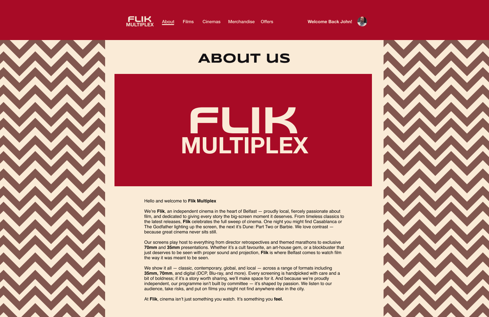
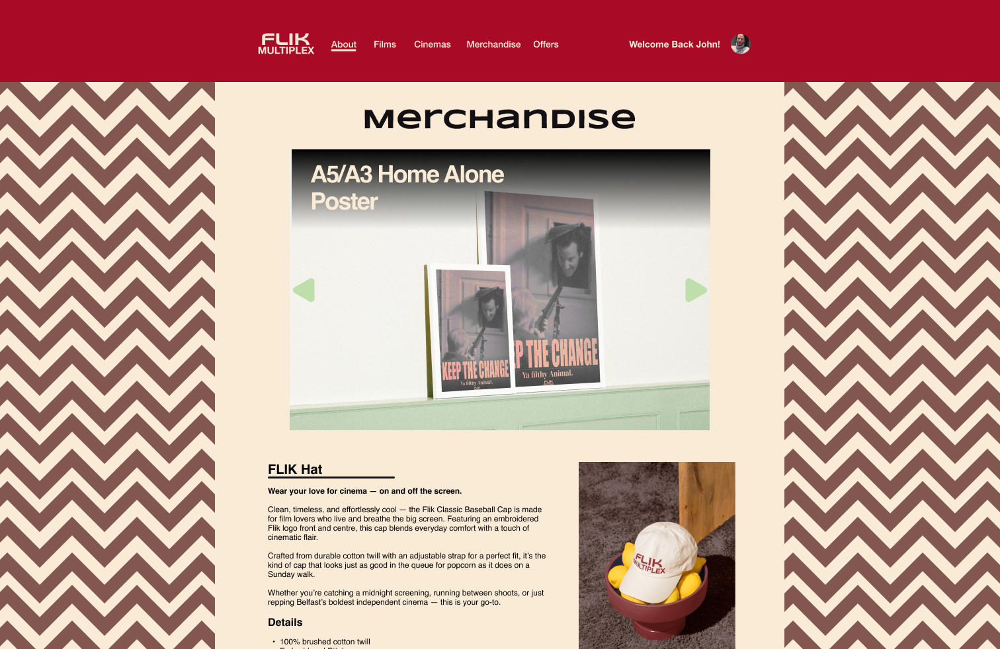

OVERVIEW
Based off Twin Peaks’ aesthetic, Flik Multiplex was a summer mini-project to showcase web, branding, and merchandising. The design draws from the Red Room’s surreal energy—fitting the theatrical feel of a classic cinema.
DIRECTION
I initially explored a brutalist approach with dulled colours—too flat for cinema. Shifting to a Lynch/Twin Peaks influence unlocked the right mood: surreal, bold, and atmospheric. That lens informed colour, typography, and motion.


DESIGNING
The system centres on high-contrast visuals, confident type, and theatrical compositions. Patterns and textures nod to curtains, chevrons, and stage lighting. Merch and posters extend the identity beyond screens.

OUTCOMES
I enjoyed the experimentation—especially the movie-quote poster. With more time, I’d add a mobile app flow and expand the merchandising line.


